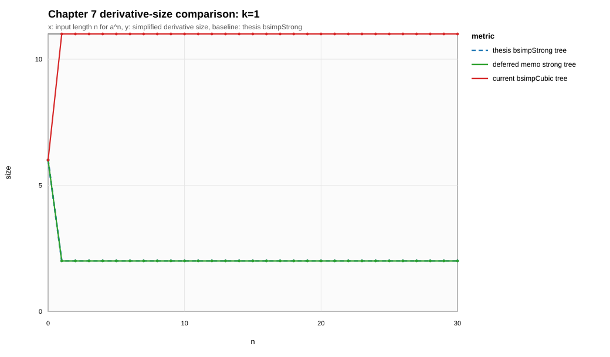
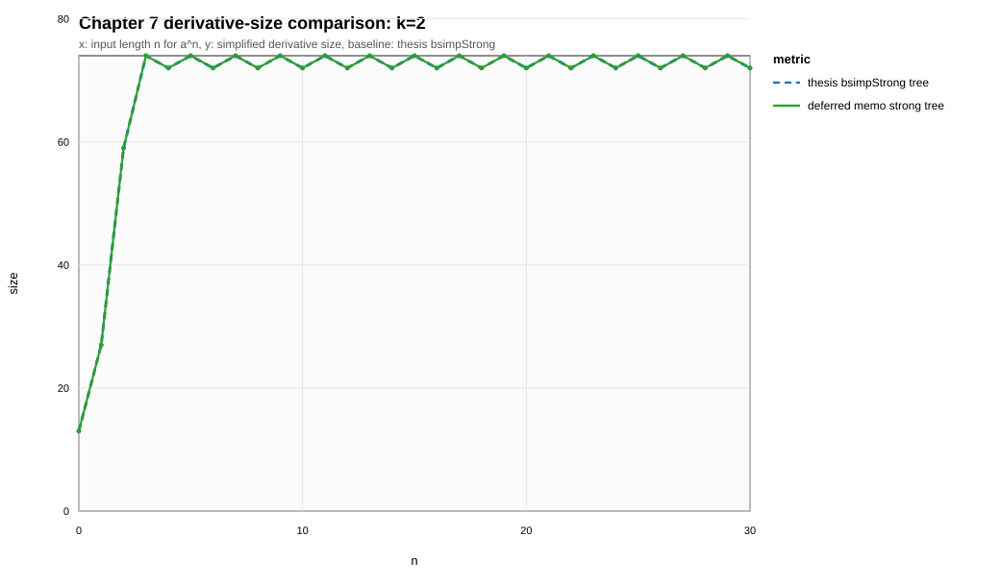
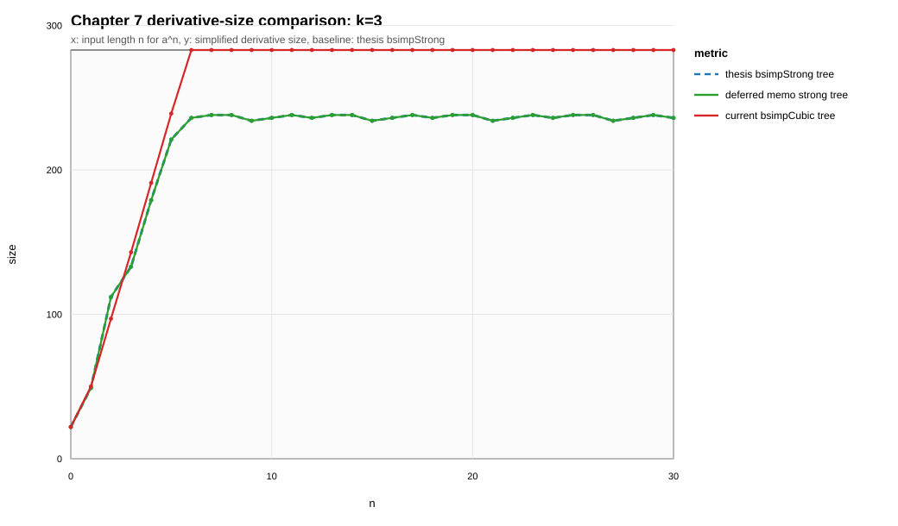
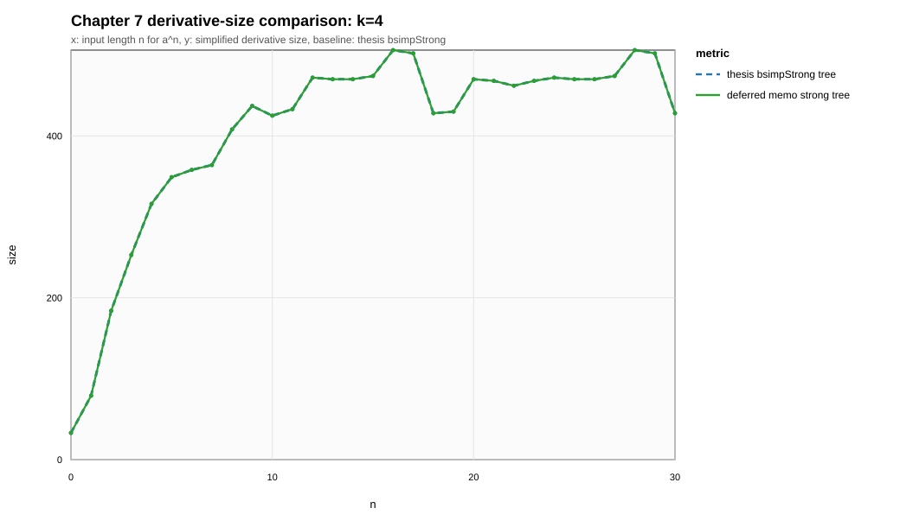
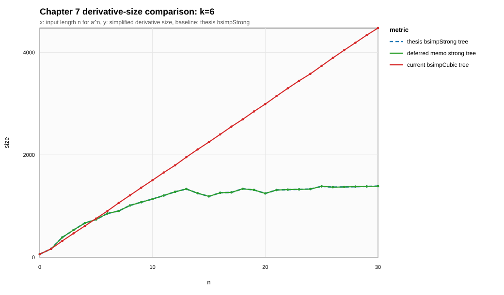
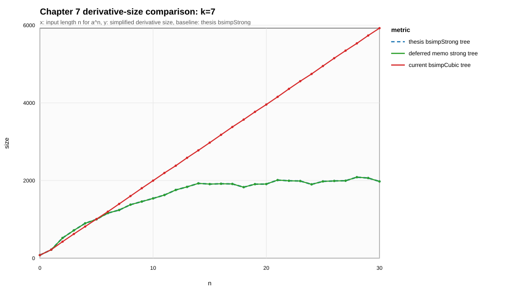

k_5_derivative_size

CSV source: ch7_size_grid.csv. Sequence mode: unary-cover-no-reassoc. Baseline for ratios: strongTree.
| k | metric | n max | value | baseline | ratio at n max | max ratio | verdict |
|---|---|---|---|---|---|---|---|
| 1 | strongTree | 30 | 2 | 2 | 1 | 1 | baseline |
| 1 | strongMemoTree | 30 | 2 | 2 | 1 | 1 | within baseline |
| 1 | cubicTree | 30 | 11 | 2 | 5.5 | 5.5 | larger than baseline |
| 2 | strongTree | 30 | 72 | 72 | 1 | 1 | baseline |
| 2 | strongMemoTree | 30 | 72 | 72 | 1 | 1 | within baseline |
| 2 | cubicTree | 30 | 55 | 72 | 0.7639 | 1.037 | larger than baseline |
| 3 | strongTree | 30 | 236 | 236 | 1 | 1 | baseline |
| 3 | strongMemoTree | 30 | 236 | 236 | 1 | 1 | within baseline |
| 3 | cubicTree | 30 | 283 | 236 | 1.199 | 1.209 | larger than baseline |
| 4 | strongTree | 30 | 428 | 428 | 1 | 1 | baseline |
| 4 | strongMemoTree | 30 | 428 | 428 | 1 | 1 | within baseline |
| 4 | cubicTree | 30 | 889 | 428 | 2.077 | 2.077 | larger than baseline |
| 5 | strongTree | 30 | 958 | 958 | 1 | 1 | baseline |
| 5 | strongMemoTree | 30 | 958 | 958 | 1 | 1 | within baseline |
| 5 | cubicTree | 30 | 3245 | 958 | 3.387 | 3.477 | larger than baseline |
| 6 | strongTree | 30 | 1389 | 1389 | 1 | 1 | baseline |
| 6 | strongMemoTree | 30 | 1389 | 1389 | 1 | 1 | within baseline |
| 6 | cubicTree | 30 | 4475 | 1389 | 3.222 | 3.222 | larger than baseline |
| 7 | strongTree | 30 | 1976 | 1976 | 1 | 1 | baseline |
| 7 | strongMemoTree | 30 | 1976 | 1976 | 1 | 1 | within baseline |
| 7 | cubicTree | 30 | 5925 | 1976 | 2.998 | 2.998 | larger than baseline |
| 8 | strongTree | 30 | 2747 | 2747 | 1 | 1 | baseline |
| 8 | strongMemoTree | 30 | 2747 | 2747 | 1 | 1 | within baseline |
| 8 | cubicTree | 30 | 7587 | 2747 | 2.762 | 2.762 | larger than baseline |





